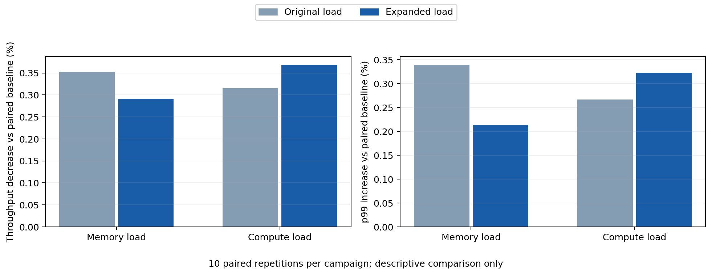

Recorded evidence summary, not a live dashboard
0 errors / mismatches · every interval ≥10,000 requests · 20 sessions released
GPU activity: compute 87.55–88.67%; expanded memory 17.67–17.78%

Paired-baseline averages; no significance claim across campaigns.
E2 GPU cross-access: INCONCLUSIVE. Memory bandwidth saturation not established.